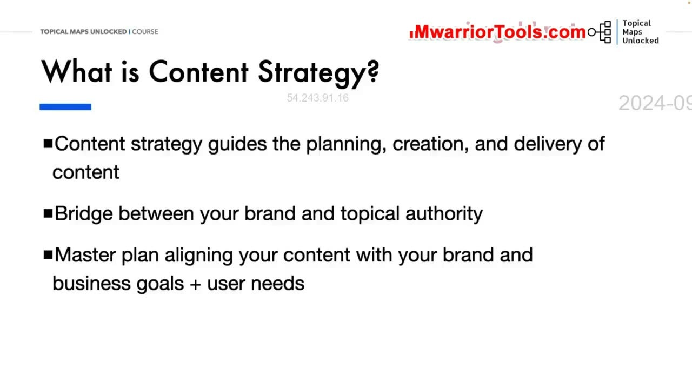
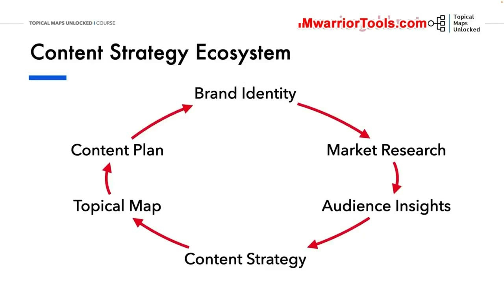
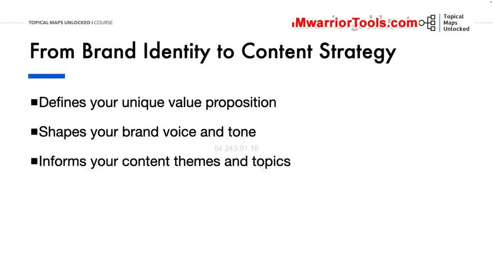
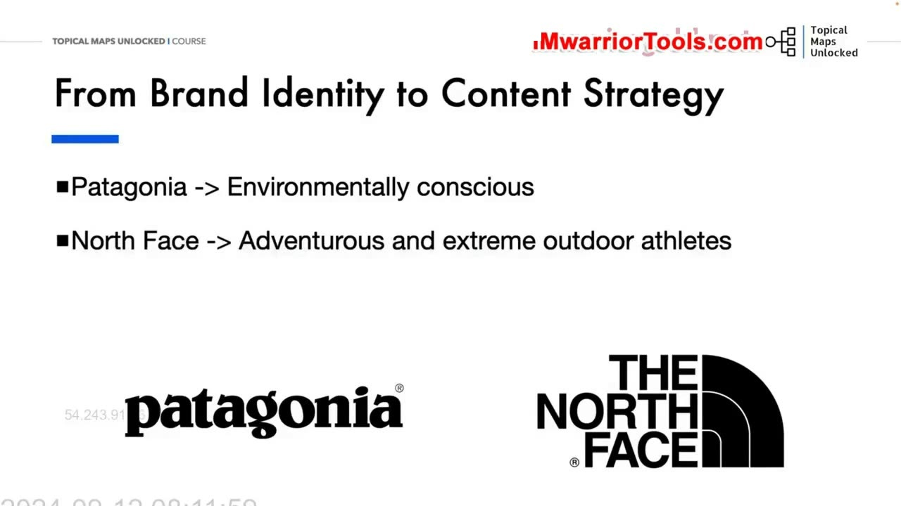
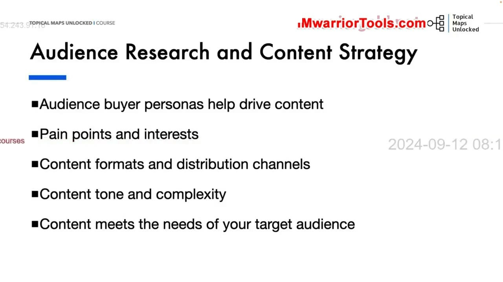
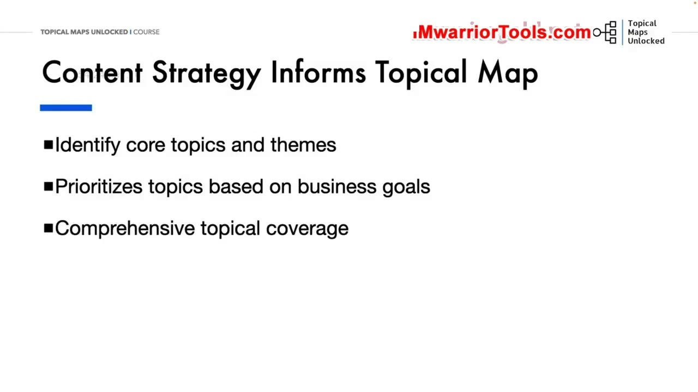
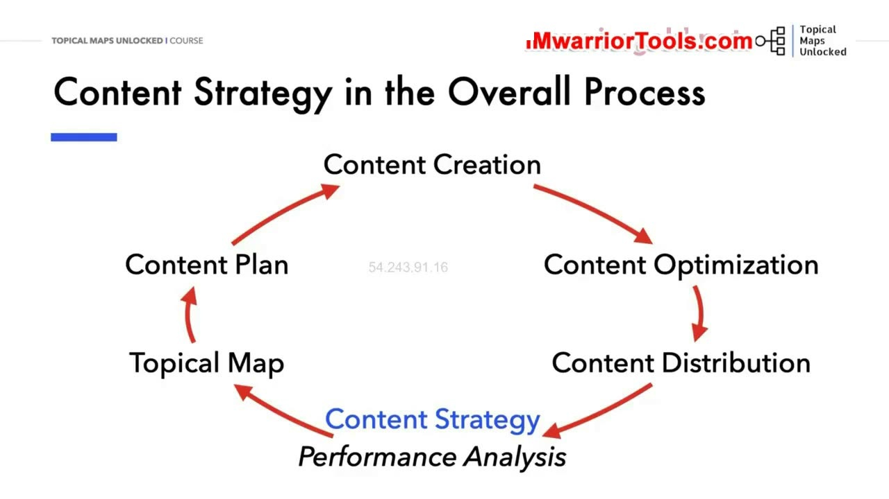

Content Strategy Overview
1. Bản chất của Content Strategy: Cầu nối giữa Brand và Topical Authority
Trong bài học tổng kết của học phần này, chúng ta đi sâu vào Content Strategy (Chiến lược nội dung). Yoyao nhấn mạnh rằng chiến lược nội dung chính là kim chỉ nam dẫn đường cho toàn bộ các hoạt động lập kế hoạch, sáng tạo, phân phối và quản trị nội dung của một trang web.
Điều quan trọng nhất cần ghi nhớ: Chiến lược nội dung chính là cây cầu kết nối vững chắc giữa Nhận diện thương hiệu (Brand Identity) và Thẩm quyền chủ đề (Topical Authority). Nó là bản kế hoạch tổng thể (Master plan) giúp dung hòa và căn chỉnh hoàn hảo giữa các mục tiêu kinh doanh của thương hiệu với những nhu cầu thực tế sâu kín của người dùng.
Nếu không có một chiến lược nội dung bài bản, bạn sẽ rất dễ rơi vào cái bẫy sản xuất bài viết một cách ngẫu hứng, rời rạc và lãng phí nguồn lực mà không tạo ra bất kỳ sự cộng hưởng nào cho sức mạnh xếp hạng tổng thể của website.

2. Mô hình Hệ sinh thái chiến lược nội dung khép kín (Content Strategy Ecosystem)
Yoyao phác thảo mô hình Hệ sinh thái chiến lược nội dung (Content Strategy Ecosystem) khép kín bao gồm 6 giai đoạn chuyển tiếp nhịp nhàng:
- Brand Identity (Nhận diện thương hiệu): Xác định rõ bạn là ai, sứ mệnh, giá trị và đề xuất bán hàng độc nhất (USP) của bạn là gì.
- Market Research (Nghiên cứu thị trường): Thấu hiểu bối cảnh ngành, phân tích năng lực đối thủ và tìm ra các khoảng trống thị trường (Market gaps).
- Audience Insights (Dữ liệu độc giả): Nắm bắt sâu sắc nhu cầu, nỗi sợ và hành vi của đối tượng khán giả mục tiêu thông qua các chân dung người mua (Buyer personas).
- Content Strategy (Chiến lược nội dung): Tổng hợp và chắt lọc toàn bộ dữ liệu từ 3 bước trên để định hình định hướng nội dung chiến lược.
- Topical Map (Bản đồ chủ đề): Cụ thể hóa chiến lược thành một cấu trúc phân cấp hoàn chỉnh gồm các chủ đề chính, chủ đề phụ và cụm từ khóa có liên quan.
- Content Plan (Kế hoạch nội dung): Lên lịch trình xuất bản chi tiết theo từng mốc thời gian cụ thể cho từng bài viết trong từng Silo.
Hệ sinh thái này đảm bảo mọi đồng vốn và thời gian bạn đầu tư vào việc viết bài đều phục vụ trực tiếp cho việc xây dựng thẩm quyền chủ đề vững chắc.

3. Từ Bản sắc thương hiệu chuyển dịch sang Chiến lược nội dung
Bản sắc thương hiệu chi phối chiến lược nội dung theo 3 cách thức quyết định:
- Định nghĩa đề xuất giá trị độc nhất (Unique Value Proposition): Giúp bạn biết rõ website của mình mang lại giá trị gì đặc biệt mà không một đối thủ nào có thể sao chép được.
- Định hình giọng văn và phong cách biểu đạt (Brand Voice & Tone): Đảm bảo mọi bài viết đều truyền tải cùng một thái độ, tính cách và tinh thần nhất quán đến độc giả.
- Cung cấp thông tin định hướng cho các chủ đề và đề tài bài viết (Content Themes & Topics): Giúp bạn biết rõ những lĩnh vực nào thương hiệu nên đào sâu chuyên môn, và kiên quyết loại bỏ những chủ đề không phù hợp với định vị.

4. Nghiên cứu đối chiếu thực tế: Định vị Patagonia và The North Face
Để minh họa rõ ràng cho việc bản sắc thương hiệu định hướng chiến lược nội dung như thế nào, Yoyao phân tích hai thương hiệu thời trang dã ngoại hàng đầu thế giới:
- Patagonia: Bản sắc thương hiệu của họ gắn chặt với triết lý ý thức bảo vệ môi trường và phát triển bền vững (Environmentally conscious). Do đó, chiến lược nội dung của họ xoay quanh các chiến dịch bảo tồn thiên nhiên, phong trào tái chế đồ cũ (Worn Wear) và các câu chuyện về trách nhiệm xã hội. Họ khuyến khích khách hàng mua ít đi và sử dụng bền lâu hơn.
- The North Face: Bản sắc thương hiệu lại tập trung vào tinh thần phiêu lưu mạo hiểm, vượt qua giới hạn khắc nghiệt của các vận động viên thể thao mạo hiểm (Adventurous and extreme outdoor athletes). Do đó, chiến lược nội dung của họ tràn ngập các thước phim tài liệu chinh phục đỉnh núi tuyết, các cuộc đua siêu marathon và các thử thách thể lực phi thường.
Mặc dù cùng sản xuất áo khoác và thiết bị dã ngoại, nhưng hai bản sắc thương hiệu khác nhau đã tạo ra hai chiến lược nội dung và hai hệ sinh thái bài viết hoàn toàn tách biệt. Đó là bằng chứng sống động nhất cho thấy thương hiệu quyết định nội dung.

5. Nghiên cứu thị trường và Độc giả dẫn dắt Chiến lược nội dung
Nghiên cứu thị trường và nghiên cứu độc giả đóng vai trò là hai cánh tay đắc lực cung cấp dữ liệu thực chiến cho chiến lược nội dung:
- Nghiên cứu thị trường: Giúp nhận diện chính xác các khoảng trống nội dung trong ngành (Industry content gaps), tìm ra những điểm yếu trong chiến lược của đối thủ cạnh tranh, nắm bắt các xu hướng tìm kiếm mới nổi và tạo ra sự khác biệt rõ nét cho thương hiệu của bạn.
- Nghiên cứu độc giả: Chân dung khách hàng lý tưởng (Buyer personas) giúp định hướng trực tiếp việc lên ý tưởng bài viết. Nó giúp bạn thấu hiểu sâu sắc các điểm đau (Pain points) và sở thích của độc giả; từ đó quyết định chính xác định dạng nội dung (video ngắn hay bài viết dài), các kênh phân phối tối ưu (mạng xã hội nào, nhóm nào), giọng văn tiếp cận và độ phức tạp của bài viết sao cho đáp ứng trọn vẹn kỳ vọng của người đọc.

6. Chiến lược nội dung định hình Topical Map và Kế hoạch sản xuất
Chiến lược nội dung đóng vai trò là bộ não chỉ huy quá trình thiết kế Topical map:
- Xác định các chủ đề cốt lõi (Core Topics) và cụm chủ đề lớn (Themes): Khoanh vùng chính xác những lĩnh vực chuyên môn mà website cần thống trị.
- Ưu tiên các chủ đề dựa trên mục tiêu kinh doanh (Prioritize topics based on business goals): Phân bổ nguồn lực để sản xuất trước những cụm chủ đề mang lại tỷ suất sinh lời hoặc giá trị chuyển đổi cao nhất.
- Bảo đảm sự bao phủ chủ đề toàn diện (Comprehensive topical coverage): Ngăn chặn việc tạo ra các cụm bài viết chắp vá hoặc thiếu sót các góc nhìn quan trọng.
Từ Topical map, chiến lược nội dung chuyển hóa thành Content Plan (Kế hoạch nội dung chi tiết): Thiết lập một cấu trúc phân cấp bài bản để đội ngũ sản xuất nội dung biết rõ chính xác bài nào viết trước, bài nào viết sau theo từng Silo tuần tự.

7. Chu trình tổng thể: Sáng tạo, Tối ưu hóa, Phân phối và Phân tích hiệu suất
Yoyao kết thúc bài học bằng việc hoàn thiện bức tranh vận hành tổng thể của toàn bộ quy trình chiến lược nội dung khép kín:
- Content Creation (Sáng tạo nội dung): Bám sát kế hoạch nội dung để sản xuất các bài viết có chiều sâu, chất lượng cao và độc đáo.
- Content Optimization (Tối ưu hóa nội dung): Áp dụng các kỹ thuật SEO On-page, tối ưu hóa thực thể (Entity SEO), liên kết nội bộ chiến lược và tích hợp dữ liệu có cấu trúc Schema.
- Content Distribution (Phân phối nội dung): Chủ động đưa bài viết đến với khán giả thông qua các kênh mạng xã hội, bản tin email và các cộng đồng chuyên ngành.
- Performance Analysis (Phân tích hiệu suất): Thường xuyên đo lường các chỉ số tăng trưởng: thứ hạng từ khóa, lưu lượng truy cập tự nhiên, thời gian đọc trung bình và tỷ lệ chuyển đổi đơn hàng.
Dữ liệu phân tích hiệu suất này sẽ tạo thành một vòng phản hồi liên tục (Feedback Loop) quay trở lại để tinh chỉnh chiến lược nội dung và cập nhật lại Topical map theo thời gian. Yoyao nhấn mạnh: Xây dựng Topical authority là một cuộc chạy marathon đường dài đòi hỏi sự kiên định, thấu hiểu thương hiệu và liên tục tối ưu hóa dựa trên dữ liệu thực tế.

Nguồn và đối chiếu
- Topical Maps Unlocked 2.0 · 04-Content Strategy Overview (Video bài học chính).
- Đối chiếu ngữ nghĩa với bản tiếng Anh: Bản Tiếng Anh/03-Brand and Content Strategy Module/04-Content Strategy Overview.mp4 (xác thực mô hình hệ sinh thái chiến lược nội dung khép kín và so sánh định vị Patagonia vs The North Face).